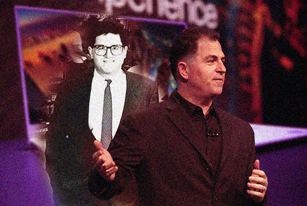

Ngày nay, Bill Gates, Mark Zuckerberg, Jack Ma,... là những tỷ phú công nghệ với tổng tài sản tính bằng tỷ USD, nhưng trước kia, họ cũng là những thanh niên trẻ nuôi trong mình hoài bão khởi nghiệp như bao bạn trẻ khác.
Vậy, những tỷ phú công nghệ khởi nghiệp năm bao nhiêu tuổi và ngày xưa trông họ thế nào? Mời các bạn cùng điểm qua đôi nét về thời tuổi trẻ của một số nhân vật thành công nhất, thông qua bài tổng hợp trên trang Business Insider.
Musk và anh trai Kimbal đã thành lập Zip2 (ban đầu là Global Link Information Network - Mạng thông tin liên kết toàn cầu), một công ty cung cấp hướng dẫn trực tuyến về thành phố cho các tờ báo như New York Times và Chicago Tribune. Startup của Musk được mua lại 4 năm sau đó bởi Compaq – một công ty máy tính.
Sau đó, Musk tiếp tục phát triển một số công ty, bao gồm X.com (đã được sáp nhập với PayPal) và các công ty nơi ông hiện đang là CEO như Tesla, SpaceX và The Boring Company.
Ở trường trung học, Gates và một người bạn tên Paul Allen đã mở một doanh nghiệp có tên Traf-o-Data làm về lĩnh vực tự động hóa quá trình phân tích dữ liệu lưu lượng giao thông cho các con đường ở Washington.
Công ty vẫn tiếp tục hoạt động sau khi 2 người học xong trung học, vào đại học và bỏ đại học. Năm 1975, họ thành lập Microsoft. Sau đó, khi Traf-O-Data thất bại vì "mô hình kinh doanh thiếu sót" – theo nhận định của Allen, cả 2 tập trung phát triển Microsoft.
Nhà sáng lập của hãng laptop Dell nổi tiếng, Michael Dell bắt đầu Dell Technologies từ ký túc xá khi là sinh viên năm nhất tại Đại học Texas ở Austin. Lợi nhuận mang lại cho phép ông thuyết phục cha mẹ rằng mình có thể bỏ học đại học để kinh doanh về máy tính toàn thời gian.
Cũng như Michael Dell, Zuckerberg đã phát triển Facebook với tên gọi "Thefacebook" ở ký túc xá vào năm 2004 khi còn là sinh viên năm 2 tại Đại học Harvard. Cuối năm đó, Mark bỏ học để dành trọn thời gian cho việc phát triển mạng xã hội mà bây giờ đã trở thành lớn nhất hành tinh.
Yang đã gặp người đồng sáng lập Yahoo - David Filo trong một lớp học tại Đại học Stanford với tư cách là người dự tuyển tiến sĩ về kỹ thuật điện. Họ bắt đầu làm việc trên Yahoo như một dự án phụ để theo dõi các liên kết yêu thích trên internet.
Tháng 1/1994, Yang và người cộng sự ra mắt thư mục trực tuyến "Hướng dẫn của Jerry và David về World Wide Web". Trang web đã nhận được 1 triệu lượt truy cập lần đầu tiên vào mùa thu năm đó.

Dorsey là một người bỏ học đại học 2 lần. Khi ở ngôi trường đầu tiên - Đại học Missouri-Rolla, anh đã xâm nhập vào trang web của một công ty và tìm thấy một lỗ hổng bảo mật. Ngay lập tứ, người sáng lập công ty - Gregg Kidd đã thuê Dorsey và thuyết phục anh chuyển đến New York, nơi đặt văn phòng.
Dorsey đăng ký vào Đại học New York, nhưng bỏ học ngay sau đó để cùng Kidd chuyển đến San Francisco. Họ cùng nhau ra mắt một công ty phần mềm có tên là dNet cung cấp dịch vụ giao hàng trong ngày khi mua hàng trực tuyến. Dù nhận được bảo trợ từ nhóm đầu tư Band of Angels, công ty đã sớm thất bại.
6 năm sau, Dorsey góp phần tạo ra Twitter – mạng xã hội cũng có vị thế rất lớn hiện nay.

Sau khi bỏ công việc giảng dạy tiếng Anh tại trường đại học địa phương, Jack Ma thành lập công ty dịch thuật Haibo Translation Agency. Vào năm 1995, ông đến Mỹ và bắt gặp chiếc máy tính kết nối internet đầu tiên.
Tìm kiếm trực tuyến đầu tiên của Ma là "bia", nhưng Jack ngạc nhiên khi thấy rằng không có loại bia Trung Quốc nào xuất hiện trong danh sách kết quả. Thế là sau đó, ông quyết định thành lập một công ty internet cho Trung Quốc mà bây giờ trở thành đế chế Alibaba.com hùng mạnh.

Bezos đã bỏ công việc tại quỹ đầu tư D.E. Shaw để ra mắt Amazon.com, dù chỉ bắt đầu với tư cách là một người bán sách trực tuyến. Ông đã lái xe khắp đất nước cùng với vợ cũ MacKenzie rồi quyết định đặt nền móng cho Amazon ở Seattle.
Trên chuyến đi, Giám đốc điều hành Amazon đã tìm mọi cách khai thác một kế hoạch kinh doanh trên máy tính và gọi các nhà đầu tư tiềm năng qua điện thoại di động.
Spiegel lần đầu tiên giới thiệu ý tưởng về Snapchat tại lớp thiết kế sản phẩm ở Đại học Stanford vào tháng 4/2011. Lúc bấy giờ, bạn bè trong lớp nhìn nhận dự án “hình ảnh chia sẻ với bạn bè sẽ biến mất mãi mãi” của Spiegel như một ý tưởng tồi tệ.
Vài tháng sau, Spiegel và 2 người đồng sáng lập khác là Bobby Murphy cùng Reggie Brown đã ra mắt Snapchat. Ứng dụng ban đầu được đặt tên là "Picaboo" và được 3 người xây dựng từ nhà của cha Spiegel ở Los Angeles.
Spiegel đã bỏ học một vài tín chỉ ở Đại học Stanford để phát triển Snapchat, nhưng sau đó anh đã trở lại trường để hoàn thành chương trình học vào năm 2018.
Vài năm sau khi tốt nghiệp Đại học Tufts, Omidyar đã đồng sáng lập công ty điện toán có tên gọi Ink Development với bạn bè, sau đó chuyển thành công ty phần mềm mua sắm trên internet có tên eShop (Microsoft mua lại năm 1996 giá 50 triệu USD). Trước thương vụ vừa nêu hoàn tất, Omidyar đã ra mắt eBay năm 1995.
Các nhà đồng sáng lập Google gặp nhau vào năm 1995 tại Đại học Stanford. Brin là một sinh viên tốt nghiệp khoa khoa học máy tính và Page đang xem xét việc theo học tại trường. Lúc đầu, cả hai đều không ưa nhau, nhưng họ đã trở thành bạn học khi Page đăng ký làm nghiên cứu sinh.
Cả hai bắt đầu làm việc trong một dự án nghiên cứu về việc lập danh mục cho mọi liên kết trên internet, ban đầu được gọi là "BackRub". Họ sớm rời khỏi Stanford và thành lập Google vào năm 1998 từ nhà để xe của Susan Wojcicki - CEO YouTube tại Menlo Park, California.
Steve Jobs và đồng sáng lập Apple - Steve Wozniak gặp nhau lần đầu thông qua một người bạn chung vào năm 1971 trước khi trở thành bạn bè.
Họ thường làm việc trong các dự án công nghệ nhỏ và cùng nhau tham dự các cuộc họp do Câu lạc bộ Máy tính Homebrew tổ chức vào năm 1975. Jobs và Wozniak bắt đầu quan tâm đến máy tính tại các cuộc họp và nhanh chóng biến sở thích của họ thành công ty Apple.
Bộ đôi Steve làm việc trong ga-ra để xe ở ngôi nhà thuộc sở hữu của cha mẹ Jobs. Những người hàng xóm thường thấy Jobs tổ chức các cuộc họp với quần jean và đôi chân trần.
Karp không bao giờ học hết cấp ba (anh bỏ học năm 14 tuổi), hoặc học đại học. Điều đó không ngăn anh tham gia vào lĩnh vực công nghệ và trở thành giám đốc công nghệ cho một bảng tin nhắn trực tuyến có tên UrbanBaby (sau này được CNET mua lại vào năm 2006).
Kiếm được vài ngàn đô la từ thương vụ trên, Karp thành lập công ty riêng của mình có tên Davidville. Đây chính là nền tảng để anh phát triển các công ty Internet khác nhau, bao gồm Tumblr.
Có thể thấy, Mark Zuckerberg và Evan Spiegel đều trở thành triệu phú trước khi bước sang tuổi 30 nhưng không phải tỷ phú nào cũng thành công ngay từ dự án đầu tiên.
Có nhiều người đã bỏ học đại học, thậm chí là trung học, nhưng họ đều có ý tưởng đắt giá, học từ rất nhiều "trường lớp" khác và luôn nỗ lực không ngừng để hiện thực hóa ý tưởng. Đó chính là điều kiện quan trọng để họ đạt được thành công.
Và đó cũng chính là bài học cho chúng ta: Thành công nào cũng cần đến quá trình học hỏi và phấn đấu không ngừng, thậm chí trải qua nhiều thất bại, thay vì tự huyễn hoặc mình rằng "nhiều tỷ phú cũng bỏ học" để không theo đuổi con đường học hành một cách nghiêm túc.